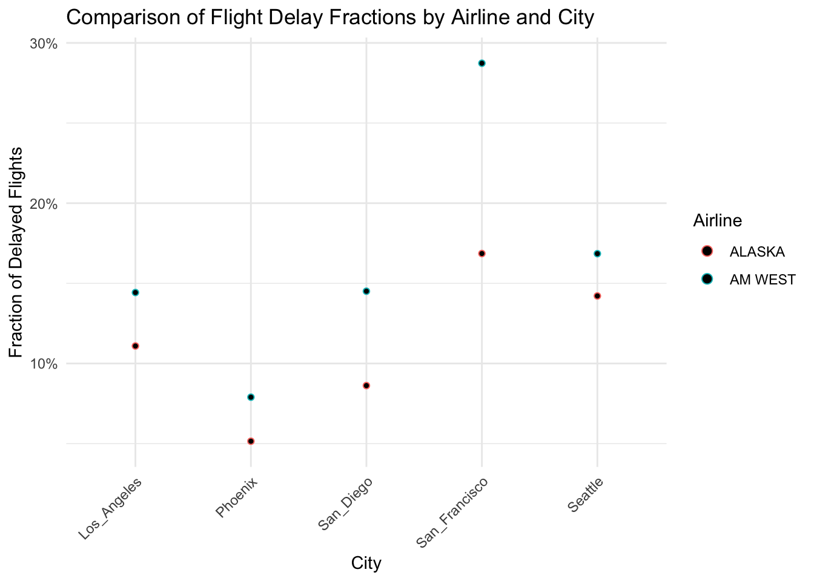
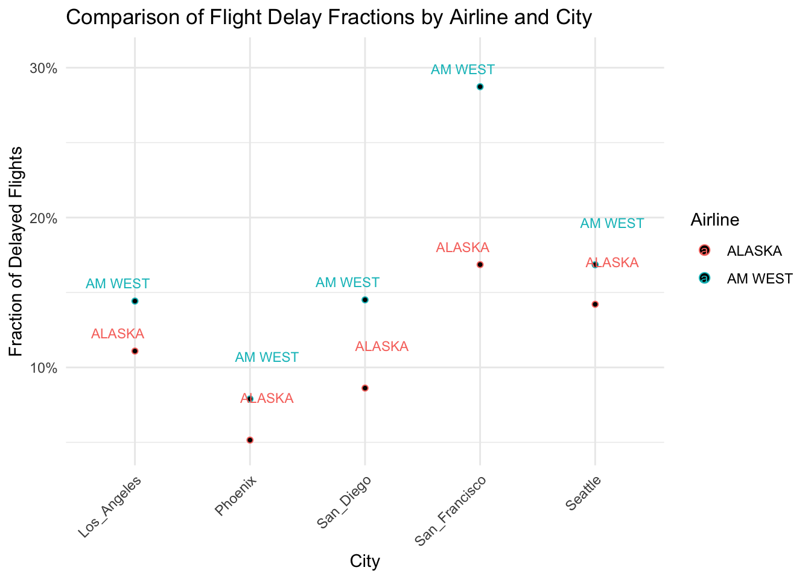

flightdelay = read_csv('flightdelays.csv')Lab 2: Data Tidying
Overview
In this assignment you will work to tidy, clean, and analyze two different datasets, the first is a small dataset contained in a csv file called flightdelays.csv, and the second called MixedDrinkRecipes-Prep.csv.
The most important book chapters which cover the techniques you will practice here are R4DS Chapters 5 and 7. Also helpful are the tidyr vignette on pivoting and the ggplot help page on the geom_dotplot.
Submit your completed assignment on the course brightspace page by uploading your .qmd file and a compiled pdf or link to a compiled html, which you could host on your github or rpubs page as you wish.
Part 1: Airplane flight delays
Consider the following dataset:
| Los_Angeles | Phoenix | San_Diego | San_Francisco | Seattle | ||
|---|---|---|---|---|---|---|
| ALASKA | On_Time | 497 | 221 | 212 | 503 | 1841 |
| Delayed | 62 | 12 | 20 | 102 | 305 | |
| AM WEST | On_Time | 694 | 4840 | 383 | 320 | 301 |
| Delayed | 117 | 415 | 65 | 129 | 61 |
The above table describes arrival delays for two different airlines across several destinations. The numbers correspond the the number of flights that were in either the delayed category or the on time category.
Problems
Problem 1: Read the information from flightdelays.csv into R, and use tidyr and dplyr to convert this data into a tidy/tall format with names and complete data for all columns. Your final data frame should have City, On_Time_Flights and Delayed_Flights as columns (the exact names are up to you). In addition to pivot_longer, pivot_wider and rename, you might find the tidyr function fill helpful for completing this task efficiently. Although this is a small dataset that you could easily reshape by hand, you should solve this problem using tidyverse functions that do the work for you.
# pivot longer
flightdelay1 <- flightdelay |> pivot_longer(cols = 'Los_Angeles':'Seattle', names_to = 'City', values_to = 'N_of_flights')
# rename df columns
flightdelay2 <- flightdelay1 |> rename('Airline'='...1', 'Status'='...2')
# Fill missing Airline values
flightdelay2 <- flightdelay2 %>%
fill(Airline, .direction = "down") # Fill downwards within each group
flightdelay2# A tibble: 20 × 4
Airline Status City N_of_flights
<chr> <chr> <chr> <dbl>
1 ALASKA On_Time Los_Angeles 497
2 ALASKA On_Time Phoenix 221
3 ALASKA On_Time San_Diego 212
4 ALASKA On_Time San_Francisco 503
5 ALASKA On_Time Seattle 1841
6 ALASKA Delayed Los_Angeles 62
7 ALASKA Delayed Phoenix 12
8 ALASKA Delayed San_Diego 20
9 ALASKA Delayed San_Francisco 102
10 ALASKA Delayed Seattle 305
11 AM WEST On_Time Los_Angeles 694
12 AM WEST On_Time Phoenix 4840
13 AM WEST On_Time San_Diego 383
14 AM WEST On_Time San_Francisco 320
15 AM WEST On_Time Seattle 301
16 AM WEST Delayed Los_Angeles 117
17 AM WEST Delayed Phoenix 415
18 AM WEST Delayed San_Diego 65
19 AM WEST Delayed San_Francisco 129
20 AM WEST Delayed Seattle 61flightdelay3 <- flightdelay2 |> pivot_wider(names_from = Status, values_from = N_of_flights, values_fn = sum)
# sum the duplicate values
flightdelay3# A tibble: 10 × 4
Airline City On_Time Delayed
<chr> <chr> <dbl> <dbl>
1 ALASKA Los_Angeles 497 62
2 ALASKA Phoenix 221 12
3 ALASKA San_Diego 212 20
4 ALASKA San_Francisco 503 102
5 ALASKA Seattle 1841 305
6 AM WEST Los_Angeles 694 117
7 AM WEST Phoenix 4840 415
8 AM WEST San_Diego 383 65
9 AM WEST San_Francisco 320 129
10 AM WEST Seattle 301 61Problem 2: Take the data-frame that you tidied and cleaned in Problem 1 and create additional columns which contain the fraction of on-time and delayed flights at each airport. Then create a dot-plot using the geom_dotplot function (see the ggplot page for dotplot) to visualize the difference in flight delays between the two airlines at each city in the dataset. What conclusions can you draw from the dotplot?
Optional: If you want to make a fancier visualization consider adding text labels containing the airline names above the dots using geom_text and position = position_nudge(...) with appropriate arguments.
# Calculate fractions of on-time and delayed flights
flightdelay4 <- flightdelay3 %>%
group_by(Airline, City) %>%
mutate(fraction_on_time = On_Time / sum(On_Time, Delayed),
fraction_delayed = Delayed / sum(On_Time, Delayed))
flightdelay4# A tibble: 10 × 6
# Groups: Airline, City [10]
Airline City On_Time Delayed fraction_on_time fraction_delayed
<chr> <chr> <dbl> <dbl> <dbl> <dbl>
1 ALASKA Los_Angeles 497 62 0.889 0.111
2 ALASKA Phoenix 221 12 0.948 0.0515
3 ALASKA San_Diego 212 20 0.914 0.0862
4 ALASKA San_Francisco 503 102 0.831 0.169
5 ALASKA Seattle 1841 305 0.858 0.142
6 AM WEST Los_Angeles 694 117 0.856 0.144
7 AM WEST Phoenix 4840 415 0.921 0.0790
8 AM WEST San_Diego 383 65 0.855 0.145
9 AM WEST San_Francisco 320 129 0.713 0.287
10 AM WEST Seattle 301 61 0.831 0.169 install.packages("ggrepel") # Install if you haven't already# Create the dot plot
ggplot(flightdelay4, aes(x = City, y = fraction_delayed, color = Airline)) +
geom_dotplot(binaxis = "y", stackdir = "center", dotsize = 0.5) +
scale_y_continuous(labels = scales::percent_format()) + # Format y-axis as percentages
labs(title = "Comparison of Flight Delay Fractions by Airline and City",
x = "City", y = "Fraction of Delayed Flights") +
theme_minimal() +
theme(axis.text.x = element_text(angle = 45, hjust = 1)) # Rotate x-axis labels for better readabilityBin width defaults to 1/30 of the range of the data. Pick better value with
`binwidth`.
# Optional: Add text labels for airlines (requires 'ggrepel' package)
library(ggrepel)
ggplot(flightdelay4, aes(x = City, y = fraction_delayed, color = Airline, label = Airline)) +
geom_dotplot(binaxis = "y", stackdir = "center", dotsize = 0.5) +
geom_text_repel(position = position_nudge(y = 0.02), # Adjust nudge as needed
size = 3) + # Adjust text size as needed
scale_y_continuous(labels = scales::percent_format()) +
labs(title = "Comparison of Flight Delay Fractions by Airline and City",
x = "City", y = "Fraction of Delayed Flights") +
theme_minimal() +
theme(axis.text.x = element_text(angle = 45, hjust = 1))Bin width defaults to 1/30 of the range of the data. Pick better value with
`binwidth`.
Part 1 Discussion The fraction of delay flight increase with the size of the airport, Phoenix has the lowest ration while San Francisco hast the highest ratio of delayed flights. However one airline has lower performance that the other in both of the ariports.
Part 2: Mixed Drink Recipes
In the second part of this assignment we will be working with a dataset containing ingredients for different types of mixed drinks. This dataset is untidy and messy- it is in a wide data format and contains some inconsistencies that should be fixed.
Problems
Problem 3 Load the mixed drink recipe dataset into R from the file MixedDrinkRecipes-prep.csv, which you can download from my github page by clicking here. The variables ingredient1 through ingredient6 list the ingredients of the cocktail listed in the name column. Notice that there are many NA values in the ingredient columns, indicating that most cocktails have under 6 ingredients.
cocktail = read_csv('MixedDrinkRecipes-Prep.csv')Tidy this dataset using pivot_longer to create a new data frame where each there is a row corresponding to each ingredient of all the cocktails, and an additional variable specifying the “rank” of that cocktail in the original recipe, i.e. it should look like this:
| name | category | Ingredient_Rank | Ingredient |
|---|---|---|---|
| Gauguin | Cocktail Classics | 1 | Light Rum |
| Gauguin | Cocktail Classics | 2 | Passion Fruit Syrup |
| Gauguin | Cocktail Classics | 3 | Lemon Juice |
| Gauguin | Cocktail Classics | 4 | Lime Juice |
| Fort Lauderdale | Cocktail Classics | 1 | Light Rum |
where the data-type of Ingredient_Rank is an integer. Hint: Use the parse_number() function in mutate after your initial pivot.
cocktail1 <- cocktail |> pivot_longer(cols = ingredient1:ingredient6, names_to = "Ingredient_Rank", names_transform = readr::parse_number, values_to = "Ingredient", values_drop_na = TRUE)
cocktail1# A tibble: 3,934 × 4
name category Ingredient_Rank Ingredient
<chr> <chr> <dbl> <chr>
1 Gauguin Cocktail Classics 1 Light Rum
2 Gauguin Cocktail Classics 2 Passion Fruit Syrup
3 Gauguin Cocktail Classics 3 Lemon Juice
4 Gauguin Cocktail Classics 4 Lime Juice
5 Fort Lauderdale Cocktail Classics 1 Light Rum
6 Fort Lauderdale Cocktail Classics 2 Sweet Vermouth
7 Fort Lauderdale Cocktail Classics 3 Juice of Orange
8 Fort Lauderdale Cocktail Classics 4 Juice of a Lime
9 Apple Pie Cordials and Liqueurs 1 Apple schnapps
10 Apple Pie Cordials and Liqueurs 2 Cinnamon schnapps
# ℹ 3,924 more rowsProblem 4: Some of the ingredients in the ingredient list have different names, but are nearly the same thing. An example include Lemon Juice versus Juice of a lemon. Make a list of the ingredients appearing in the ingredient list ranked by how commonly they occur along with the number of occurrences, and print the first 10 elements of the list here. Then check more ingredients (I suggest looking at more ingredients and even sorting them alphabetically using arrange(asc(ingredient))) and see if you can spot pairs of ingredients that are similar but have different names. Use if_else( click here for if_else ) in combination with mutate to make it so that the pairs of ingredients you found have the same name. You don’t have to find all pairs, but find at least 5 pairs of ingredients to rename. Because the purpose of this renaming is to facilitate a hypothetical future analysis, you can choose your own criteria for similarity as long as it is somewhat justifiable.
# Count occurrences of each ingredient
ingredient_counts <- cocktail1 %>%
group_by(Ingredient) %>%
summarize(Count = n()) %>%
arrange(desc(Count))
# Print the top 10 ingredients
print(head(ingredient_counts, 10))# A tibble: 10 × 2
Ingredient Count
<chr> <int>
1 Gin 176
2 Fresh lemon juice 138
3 Simple Syrup 115
4 Light Rum 114
5 Vodka 114
6 Dry Vermouth 107
7 Fresh Lime Juice 107
8 Triple Sec 107
9 Powdered Sugar 90
10 Grenadine 85# Sort ingredients alphabetically
sorted_ingredients <- cocktail1 %>%
arrange(Ingredient) %>%
distinct(Ingredient)
# Print the sorted ingredients (you'll need to visually inspect this output)
print(sorted_ingredients)# A tibble: 673 × 1
Ingredient
<chr>
1 100-proof Vodka
2 151-Proof Rum
3 17-year-old J. Wray and Nephew Ltd. Rum
4 7-Up
5 Absinthe
6 Absinthe Substitute
7 Absinthe or pastis
8 Acai berry flavored vodka
9 African rum
10 Agave nectar
# ℹ 663 more rows# Standardize ingredient names
cocktail2 <- cocktail1 %>%
mutate(Ingredient = if_else(Ingredient == "Lemon Juice", "Juice of a Lemon",
if_else(Ingredient == "Lime Juice", "Juice of a Lime",
if_else(Ingredient == "Almond milk", "Almond extract",
if_else(Ingredient == "Orange Juice", "Juice of an Orange",
if_else(Ingredient == "Absithe Substitute", "Absithe",
Ingredient))))))
# Print first few rows to verify
print(head(cocktail2))# A tibble: 6 × 4
name category Ingredient_Rank Ingredient
<chr> <chr> <dbl> <chr>
1 Gauguin Cocktail Classics 1 Light Rum
2 Gauguin Cocktail Classics 2 Passion Fruit Syrup
3 Gauguin Cocktail Classics 3 Juice of a Lemon
4 Gauguin Cocktail Classics 4 Juice of a Lime
5 Fort Lauderdale Cocktail Classics 1 Light Rum
6 Fort Lauderdale Cocktail Classics 2 Sweet Vermouth Notice that there are some ingredients that appear to be two or more ingredients strung together with commas. These would be candidates for more cleaning though this exercise doesn’t ask you to fix them.
Problem 5: Some operations are easier to do on wide data rather than tall data. Find the 10 most common pairs of ingredients occurring in the top 2 ingredients in a recipe. It is much easier to do this with a wide dataset, so use pivot_wider to change the data so that each row contains all of the ingredients of a single cocktail, just like in the format of the original data-set. Then use count on the 1 and 2 rows to determine the most common pairs (see chapter 3 for a refresher on count).
Note: You may be interested to read about the widyr package here: widyr page. It is designed to solve problems like this one and uses internal pivot steps to accomplish it so that the final result is tidy. I’m actually unaware of any easy ways of solving problem 5 without pivoting to a wide dataset.
# Pivot the dataframe back to wide format
cocktail_wide <- cocktail2 %>%
pivot_wider(id_cols = c(name, category),names_from = Ingredient_Rank,
values_from = Ingredient)
# Count the most common pairs of ingredients in columns 1 and 2
top_ingredient_pairs <- cocktail_wide %>%
count(`1`, `2`, sort = TRUE) %>%
head(10)
# Print the top 10 pairs
print(top_ingredient_pairs)# A tibble: 10 × 3
`1` `2` n
<chr> <chr> <int>
1 Juice of a Lemon Powdered Sugar 24
2 Gin Dry Vermouth 23
3 Whole Egg Powdered Sugar 13
4 Light Rum Fresh Lime Juice 12
5 Gin Triple Sec 9
6 Bourbon whiskey Fresh lemon juice 8
7 Brandy Sweet Vermouth 7
8 Gin Sweet Vermouth 7
9 Light Rum Pineapple Juice 7
10 Light Rum Sweet Vermouth 7